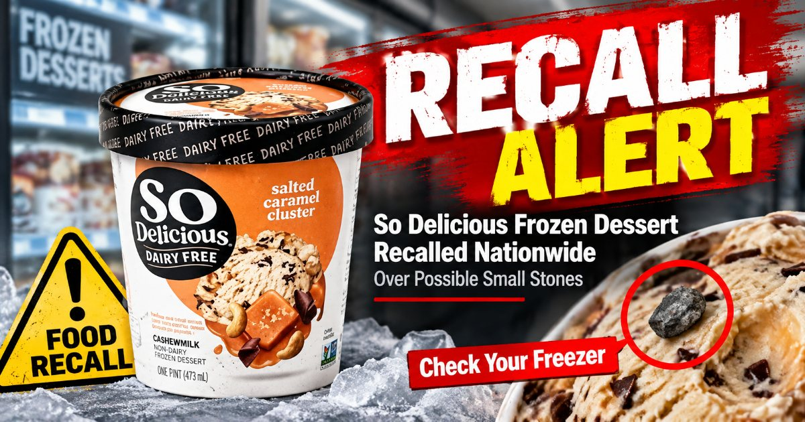
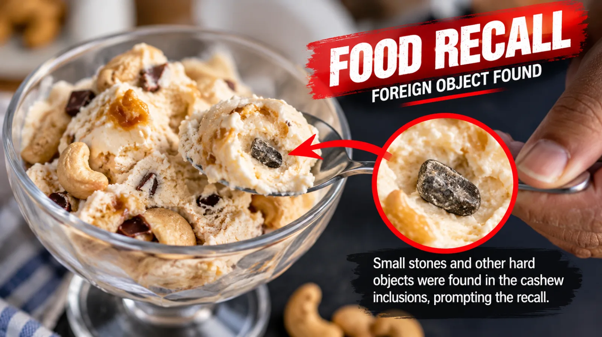
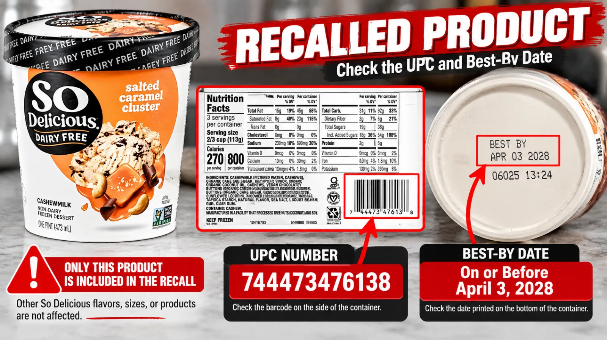
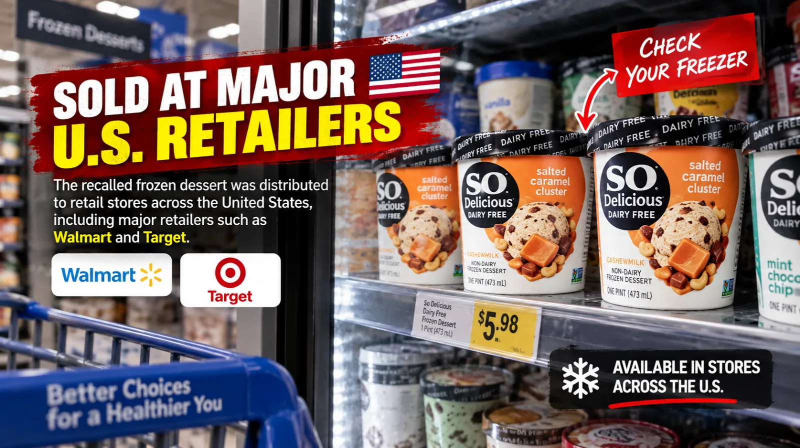
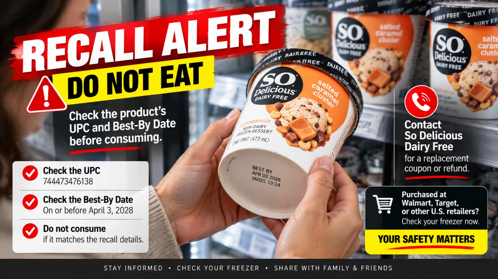
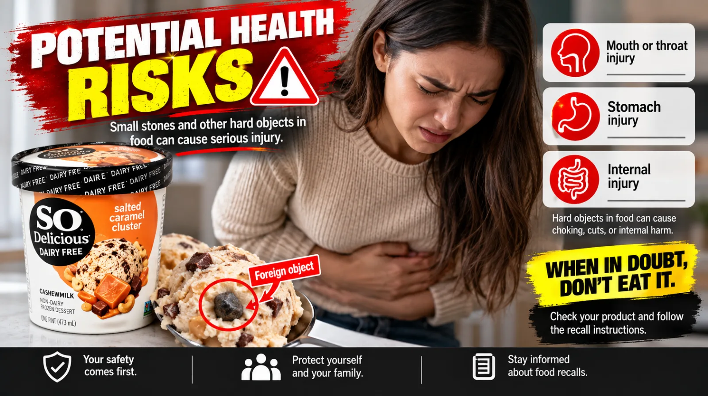
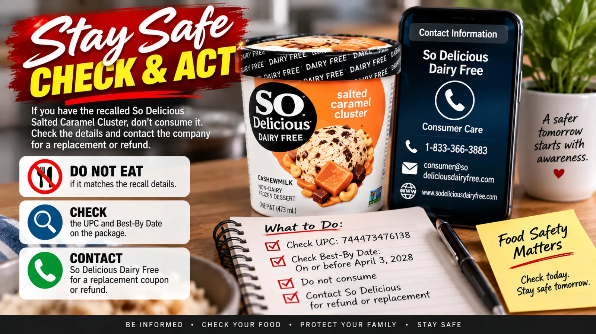

So Delicious Frozen Dessert Recalled Nationwide Over Possible Small Stones
Consumers are being urged not to eat certain So Delicious Salted Caramel Cluster frozen dessert pints after complaints about possible small stones and other hard objects.
By Jaziel Story · 4 min read · 2026-09-18

A frozen dessert sold across the United States has been recalled after consumer complaints raised concerns that some containers could contain small stones and other hard objects. Danone USA announced the voluntary recall of certain So Delicious Dairy Free Salted Caramel Cluster Non-Dairy Frozen Dessert pints on September 15, 2026, and the U.S. Food and Drug Administration published the notice the same day. The recall is limited to a specific product, SKU and best-by dates, meaning consumers should check the details on the package rather than assume every So Delicious product is affected.
Why the Frozen Dessert Was Recalled
Danone USA initiated the voluntary recall because the affected frozen dessert may contain foreign material, including small stones and other hard objects, within the cashew inclusions. The company said the issue was identified through consumer complaints and that the FDA had been informed.
Because hard foreign objects can potentially cause injury if swallowed or bitten, consumers are advised not to eat the affected product. The recall is a food-safety action and does not mean that every product made under the So Delicious Dairy Free brand is affected.
The FDA notice identifies the recalled product specifically as So Delicious Dairy Free Salted Caramel Cluster Non-Dairy Frozen Dessert sold in pint containers.

The recalled So Delicious Dairy Free Salted Caramel Cluster Non-Dairy Frozen Dessert is sold in pint containers.
Which Product Is Included in the Recall
The recalled product is the Salted Caramel Cluster Non-Dairy Frozen Dessert in pint containers. The product identification details listed by the FDA are SKU 136603 and UPC 744473476138.
The recall applies to products with best-by dates on or before April 3, 2028. These details are important because other So Delicious Dairy Free flavors, codes and products are not included in this specific recall, according to Danone USA.
Consumers who have the product in their freezer should compare the product name, UPC, SKU and best-by date before deciding whether their container is part of the recall.

The affected product was distributed to retail stores across the United States.Continue Reading →
Where the Recalled Dessert Was Sold
The recalled pints were distributed to retail stores across the United States. EatingWell reported that the product was sold at major retailers including Target and Walmart, among other retail locations.
Danone USA said it is working with retail partners to remove affected products from store shelves. Product shipped going forward is not affected by this recall, according to the company announcement published by the FDA.
The nationwide distribution means consumers who regularly buy frozen desserts may want to check their freezer even if they purchased the product at a different retail location.

Consumers should check the product name, SKU, UPC and best-by date against the recall notice.
What Consumers Should Do
Consumers who purchased an affected pint should not consume it. The FDA-published company notice says consumers can contact the So Delicious Dairy Free Consumer Care Line for a replacement coupon or refund.
The listed Consumer Care telephone number is 1-833-367-8975. The company also provides an online contact form for questions about the recall.
If someone has consumed the recalled product and is experiencing health concerns, EatingWell advises contacting a healthcare professional.

Consumers can check their freezers for the specific recalled product.Continue Reading →
How to Check Your Freezer
Start by looking for a pint labeled So Delicious Dairy Free Salted Caramel Cluster Non-Dairy Frozen Dessert. Then compare the package with the recall identifiers: SKU 136603, UPC 744473476138 and a best-by date on or before April 3, 2028.
If all of the relevant identifiers match, do not eat the product. Keep the package information available if you plan to contact the company about a refund or replacement.
It is also important not to assume that another So Delicious flavor is included simply because it carries the same brand name. The FDA notice states that no other So Delicious Dairy Free codes, flavors or products are affected by this recall.

Food recalls often apply to specific products and package identifiers rather than an entire brand.
A Reminder to Pay Attention to Recall Notices
Food recalls can involve specific products, dates and production codes rather than an entire brand. That is why checking the exact identifiers on a package can help consumers distinguish a recalled item from unaffected products.
In this case, the recall concerns a single named frozen dessert product and clearly identified package information. Consumers who do not have the affected combination of product, SKU, UPC and date are not being told to discard other So Delicious Dairy Free products under this particular recall.
For the most current information, consumers should rely on the FDA recall notice and the company's consumer-care information rather than social media posts or unverified claims.

Danone USA said it is working with retail partners to remove affected products from shelves.
The prudent see danger and take refuge, but the simple keep going and pay the penalty.
Proverbs 22:3
The So Delicious recall is a reminder that product labels matter, especially when a food-safety notice identifies a specific SKU, UPC and date range. Consumers with the affected Salted Caramel Cluster pints should not eat them and can contact So Delicious Dairy Free for assistance with a refund or replacement.
For everyone else, the key takeaway is simple: when a recall is announced, check the exact product details before deciding what to keep or discard. Official recall notices provide the information needed to make that decision.